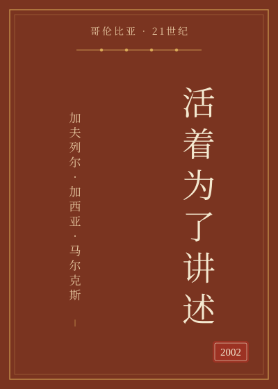
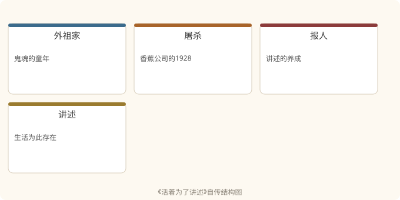

活着为了讲述
一、基本信息
| 作者 | 加西亚·马尔克斯 |
|---|---|
| 成书/出版 | 2002年（作者页 B053/B025 口径：活着为了讲述（2002）） Gabriel García Márquez — Encyclopaedia Britannica (by Roberto González Echevarría)（百科全书） |
| 国别/地区 | 哥伦比亚 |
| 时代 | 现当代 · 21世纪 |
| 体裁 | 自传 |
| 语言 | 西班牙语 |

《活着为了讲述》自传结构图（主题·结构图）
二、创作背景
作者页（B053/B025）：马尔克斯 major_works 载'活着为了讲述（2002）'（B053 作者页定位，详见 bainian 条核对）。
题材（通说待核）：自传第一卷——从出生到《枯枝败叶》前夜的'讲述者'养成史。
三、内容脉络
外祖家的鬼魂、香蕉公司屠杀、报人生涯（通说待核）。
四、主要人物表
| 人物 | 身份 | 说明 |
|---|---|---|
| 马尔克斯 | 作家 | 自传者 |
| 外祖父母 | 长辈 | （通说待核） |
五、主题与艺术特点
- '生活为讲述而存在'（书名通说待核）。
- 《百年孤独》的源流考（通说待核）。
- 记者与小说家的双生（通说）。
六、影响与评论
- 作者页：马尔克斯自传（B053 作者页口径）。
Gabriel García Márquez — Encyclopaedia Britannica (by Roberto González Echevarría)（百科全书） - 作者页：马尔克斯1982年诺奖（B053 作者级——通说核对）。
Gabriel García Márquez — Encyclopaedia Britannica (by Roberto González Echevarría)（百科全书）
七、阅读建议
难点
- 三卷计划（仅成第一卷说）。
- 自传与虚构互渗。
- 《活着为了讲述》（南海出版公司，通说待核）。
- 西班牙文原版。
马尔克斯作品读毕后的回溯。
八、待核实
- 2002年出版（Editorial Mondadori说）核对。
- 三卷计划未竟（作者2014年去世）待核。
- 香蕉屠杀（1928）史实待核。
本页主要来源
- Gabriel García Márquez — Encyclopaedia Britannica (by Roberto González Echevarría)（百科全书）
- One Hundred Years of Solitude (Cien años de soledad) — Encyclopaedia Britannica（百科全书）
加西亚·马尔克斯的其他收录作品：百年孤独一桩事先张扬的凶杀案活着为了讲述